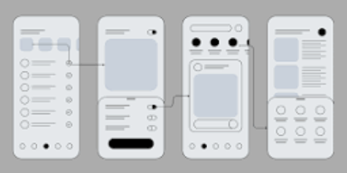
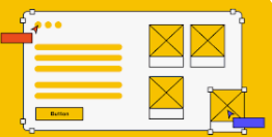

Site Name
Name: Sweet Crust Artisanal Bakery & Café
Reasoning: This name evokes a cozy, handcrafted baking experience emphasizing quality ingredients ("Artisanal") and freshly baked bread and pastries ("Sweet Crust"). It communicates warmth, hospitality, and specialty café culture.
Optional Domain Availability: sweetcrustbakery.org or sweetcrustcafe.com
Site Purpose
The site serves as a responsive digital hub for local customers and visiting patrons of Sweet Crust Artisanal Bakery & Café. It aims to:
- Showcase the seasonal menu of freshly baked breads, pastries, drinks, and lunch offerings retrieved dynamically from a JSON API source.
- Provide customers with seamless access to business hours, location details, pre-ordering options, and catering inquiries.
- Engage community members with an interactive product modal for item details, ingredient declarations, dietary tags (e.g., gluten-free, vegan), and saved order preferences stored in
LocalStorage.
Target Audience Scenarios
Target visitors include morning commuters, neighborhood regulars, catering clients, and patrons looking for special diet offerings.
- Scenario 1: "Does Sweet Crust offer gluten-free pastries or vegan sourdough bread, and what are today's featured seasonal specials?"
- Scenario 2: "What time does the café open on weekends, where is it located, and how can I submit a bulk order inquiry for a weekend event?"
Color Scheme
The chosen palette reflects a warm, rustic atmosphere reminiscent of fresh sourdough, roasted coffee beans, and warm oven light. (This site plan document uses this color scheme exclusively.)
Primary: Deep Espresso#5C3A21
(Headers, Nav background, Footer)
Secondary: Terracotta#C87D55
(H2 Borders, Buttons, Accent highlights)
Accent: Golden Crust#E2A049
(Call-to-Action text, Badges, Hover states)
Background: Soft Cream#FAF5EF
(Page body background)
Typography
The typography pairing combines a classic serif font for elegant branding with a clean sans-serif for high legibility across mobile and desktop devices.
Heading Font: Playfair Display
Sweet Crust Artisanal Bakery
Used for primary headings (h1, h2, h3), logo title, and hero callout sections to convey craftsmanship.
Body Font: Work Sans
Our bakers use traditional long-fermentation techniques with organic flour sourced from local mills.
Used for all paragraph text, navigation menus, product descriptions, form controls, and footer details.
Wireframes
The following layout sketches outline the home page structure across small (mobile) and large (desktop/tablet) viewports. They emphasize a clean mobile-first menu, hero banner, dynamic item grid, and footer location overview.
Mobile Viewport (Small)
[ Header / Logo / Hamburger Nav ]
[ Hero Banner ]
[ Daily Specials Slider ]
[ Menu Categories (1-col grid) ]
[ Hours & Location ]
[ Footer ]

Desktop Viewport (Large)
[ Header / Logo | Horizontal Nav Menu ]
[ Full-Width Hero Banner with CTA Button ]
[ 3-Column Menu Highlights & Filter Tabs ]
[ Side-by-Side: Hours/Map & Pre-order Form ]
[ Footer Grid: Socials, Quick Links, Copyright ]
